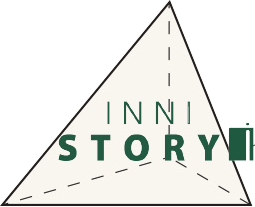

안녕하세요.
이니스토리 입니다.
이니스프리 기업문화를 보여주다.

People
symbol
이니스프리만의 스토리를
기록하는 다이어리를 의미합니다.
Culture
Story
이니스토리는 그 동안 만나보지 못했던 이니스프리의 다양한 이야기를 전합니다. 이니스토리는 감동, 진정성을 담은 영상 콘텐츠지향의 온라인 플랫폼입니다. 이니스토리는 이니스프리의 ‘behind the scene’을 담은 콘텐츠를 제공합니다.